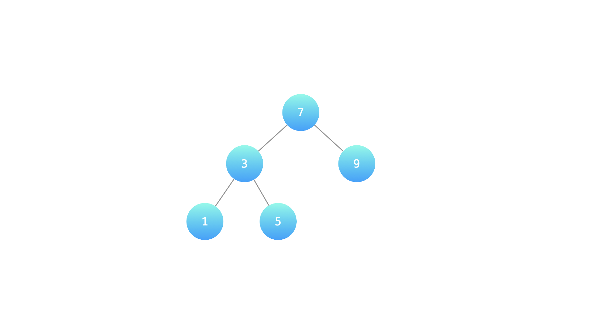
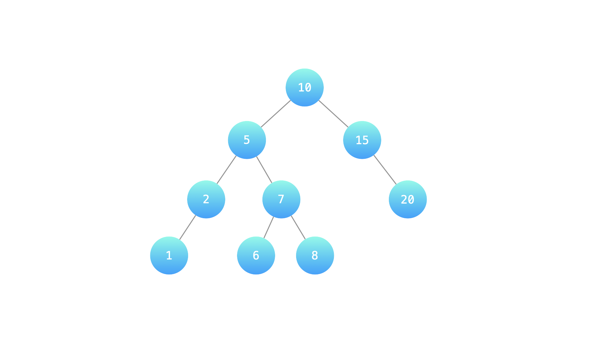

剑指 Offer 54. 寻找二叉搜索树中的目标节点
反中序遍历（右→根→左）用栈迭代，弹出的顺序就是从大到小，数到第 cnt 个直接返回。
思路
- BST 的中序是升序；反过来先右后左，就变成降序，第 cnt 个弹出的就是第 cnt 大。
- 先把右链一路压栈（攒着没数到的较大结点），弹出栈顶计数，再转到它的左子树重复。
if (--cnt == 0) return提前返回，不用遍历整棵树；最坏只走O(h + k)个结点。- 递归写法同理：先递归右子树，回来时
--cnt，为 0 记下答案再进左子树。
图解
最优解
1import java.util.*;2 3class Solution {4 public int findTargetNode(TreeNode root, int cnt) {5 Deque<TreeNode> stack = new ArrayDeque<>();6 TreeNode cur = root;7 // 反中序（右 → 根 → 左）遍历，弹出的顺序就是从大到小8 while (cur != null || !stack.isEmpty()) {9 // 右链一路压栈：栈里攒着「还没数到的较大结点」10 while (cur != null) {11 stack.push(cur);12 cur = cur.right;13 }14 cur = stack.pop();15 // 第 cnt 个弹出的就是第 cnt 大，直接返回16 if (--cnt == 0) return cur.val;17 cur = cur.left;18 }19 return -1; // 题目保证 cnt 有效，走不到这里20 }21}题目
某公司组织架构以二叉搜索树形式记录，节点值为处于该职位的员工编号。请返回第 cnt 大的员工编号。
示例 1：

输入：root = [7, 3, 9, 1, 5], cnt = 2
7
/ \
3 9
/ \
1 5
输出：7
示例 2：

输入: root = [10, 5, 15, 2, 7, null, 20, 1, null, 6, 8], cnt = 4
10
/ \
5 15
/ \ \
2 7 20
/ / \
1 6 8
输出: 8
提示：
- 1 ≤ cnt ≤ 二叉搜索树元素个数
题面取自力扣当前版本。
数据快照 2026-11-04。题面版权归力扣所有，本站点仅供本人学习使用，请勿对外发布。